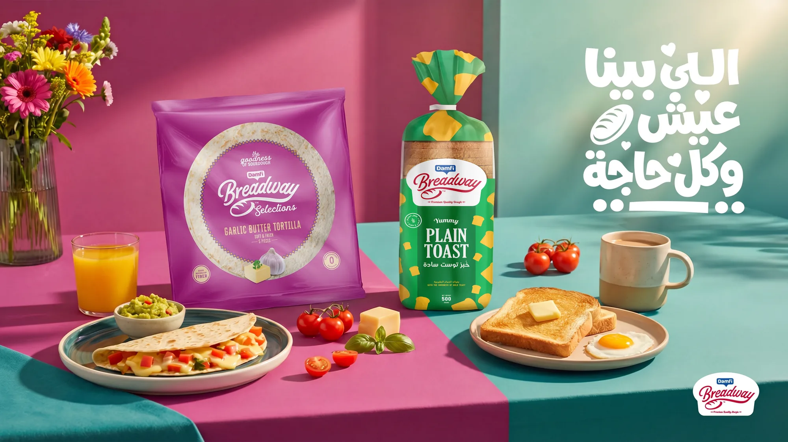
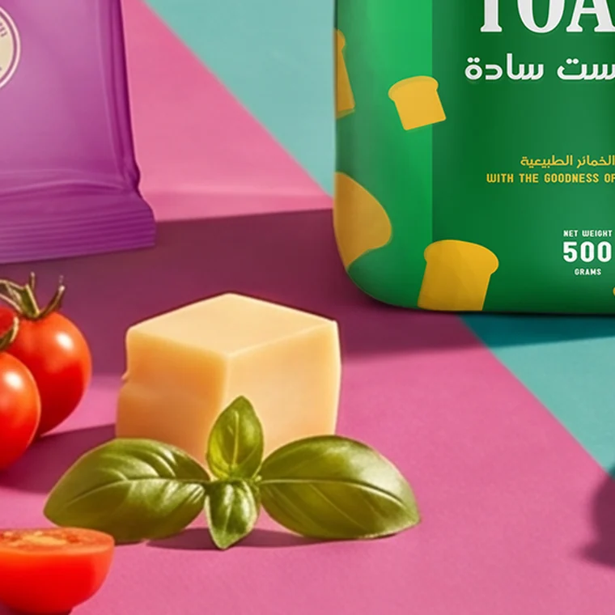
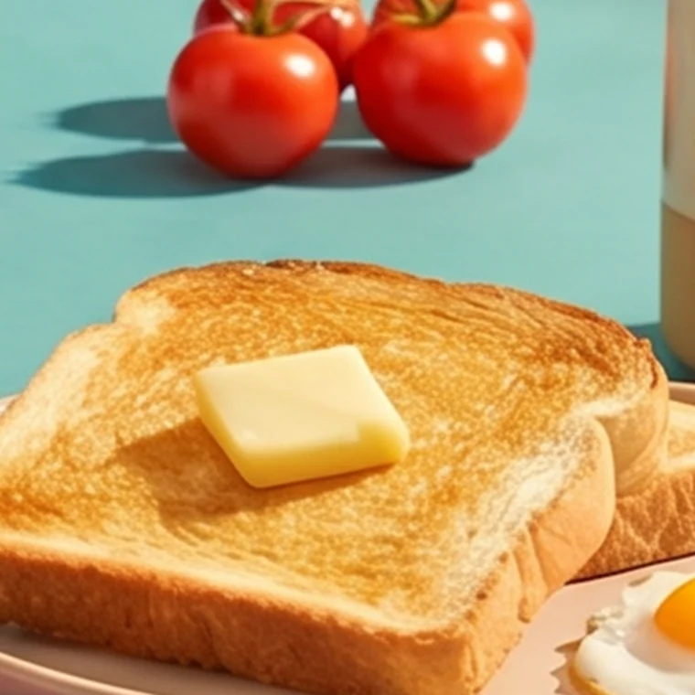
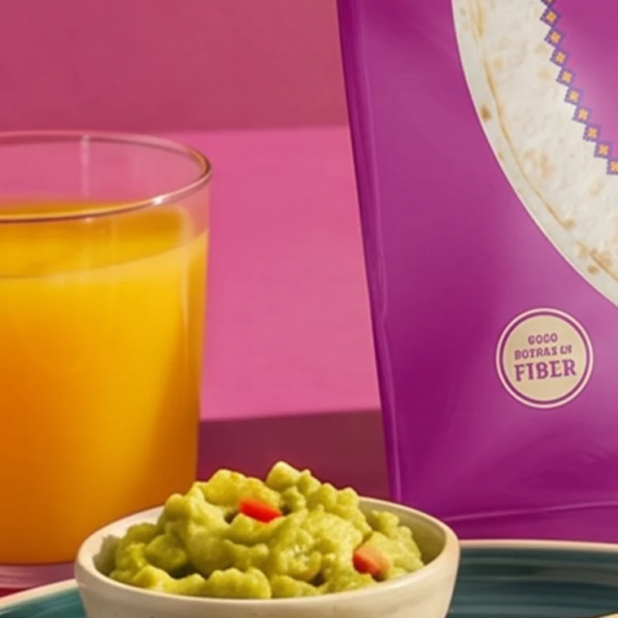

Everyday bread, made appetising.

Bread is everyday. The art direction had to make it feel fresh, warm and worth reaching for.
A styled, appetite-led scene places the product inside a real moment of eating.
Warm tones, careful styling and crisp focus make texture the hero, with the brand sitting naturally in frame.


